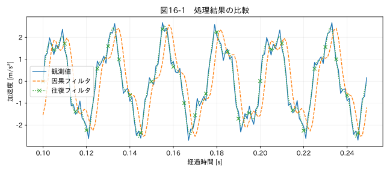

第IV部 センサーデータ特有の問題 / 第16章
この章の節
フィルタリングと波形の保全
学習目標
移動平均とButterworthフィルタの作用を理解し、振幅・位相・端点を評価する。ゼロ位相処理の非因果性と、処理してはいけない測定目的を説明する。
16.1 ノイズを消す前に信号を定義する
40 Hzの主振動を見たいとき、370 Hzの成分は不要かもしれない。しかし別の故障診断では370 Hzが重要な徴候になる。ノイズとは単に高い周波数ではなく、目的の測定に不要な成分として定義される。130 Hzの配管共振を評価するなら、その近くを減衰させるフィルタは評価を変えてしまう。
生波形を保存し、表示用、トレンド用、ピーク評価用の派生列を分ける。全用途共通の「きれいな波形」を一つ作る設計は避ける。
16.2 移動平均の数式とピーク
過去M点の因果移動平均は y[n]=(1/M)Σₖ₌₀ᴹ⁻¹ x[n−k] である。周波数応答の振幅は、fをHzで表すと |H(f)|=|sin(πfM/fₛ)/(M sin(πf/fₛ))| となる。ゼロ周波数では極限値1を取る。
M=5で、ゼロの中に10という孤立ピークが一つあると、平均後のピークは2になる。測定値の標準偏差は減っても、最大負荷の評価には使えなくなる。因果的な対称FIRとしての群遅延は通過帯域で (M−1)/(2fₛ) 秒だ。M=5、fₛ=100 Hzなら0.02秒遅れる。
中央配置の移動平均は前後の観測を使うため、時刻ラベル上の遅れを打ち消せるが、未来のデータが必要である。リアルタイムで同じ時刻に使える値ではない。単に center=True としただけで現場制御へ転用しない。
16.3 Butterworthとカットオフ
Butterworthは通過帯域が最大平坦な特性を持つフィルタの一種である。次数を上げると遷移が急になるが、過渡応答や数値的な安定性にも配慮が必要だ。本章は4次、カットオフ180 Hz、サンプリング1000 Hzとし、二次セクション形式 output='sos' で設計する。
カットオフは通す・消すの境界を完全に分ける壁ではない。通常の一方向Butterworthでは指定カットオフで振幅が1/√2、約−3.01 dBになる。130 Hzを保存したい場合も、180 Hzカットオフなら完全に無影響とはいえず、通過帯域の許容誤差を確認する。
16.4 ゼロ位相は無加工ではない
sosfiltfilt は前向き・後向きにフィルタをかける。実係数フィルタでは合成振幅応答が原フィルタの振幅の二乗になり、位相は相殺される。合成次数は倍となる。R3 一方向で−3 dBの周波数は往復で約−6 dBになるため、同じカットオフ数値の因果処理と振幅特性まで同じではない。
未来の値を使うので非因果的であり、急変の影響が急変前に現れることもある。イベント時刻の推定や異常発生の先行性を論じるときは特に注意する。ゼロ位相だから時間に関する問題がすべて解決するわけではない。
関連する詳細実験は実践補講に掲載。入力形式・同期・補間・校正・多変量・チャンク境界を扱う。
実行するコードと結果
run.py · 共通処理の全ソース
教材フォルダで python examples/chapter16/run.py を実行。以下は省略のないスクリプト。共通モジュールは教材一式に含む。
from pathlib import Path
import sys
ROOT=Path(__file__).resolve().parents[2]
sys.path.insert(0,str(ROOT))
sys.path.insert(0,str(ROOT/'examples'))
import numpy as np
import pandas as pd
from common import load,truth,seconds,plot
from tsclean.core import numeric,timestamps,time_flags,hampel,freeze_candidates,interpolate_short,compare
from scipy.signal import butter,sosfilt,sosfiltfilt
df=load('03_vibration');x=df['測定値'].to_numpy();t=seconds(df)
sos=butter(4,180,fs=1000,output='sos')
causal=sosfilt(sos,x);zero=sosfiltfilt(sos,x)
print('原波形RMS:',np.sqrt(np.mean(x*x)),'ゼロ位相後RMS:',np.sqrt(np.mean(zero*zero)))
impulse=np.r_[np.zeros(20),10.,np.zeros(20)]
print('孤立ピーク10の5点平均後:',np.convolve(impulse,np.ones(5)/5,'same').max())
plot(16,t[100:250],{'観測値':x[100:250],'因果フィルタ':causal[100:250],'往復フィルタ':zero[100:250]},'加速度 [m/s²]')
検証環境での実行結果を開く
原波形RMS: 1.4921510121505743 ゼロ位相後RMS: 1.4715596785210898
孤立ピーク10の5点平均後: 2.0

16.5 端点、欠損、短い区間
図16-1は端部を避けた区間で因果処理と往復処理を比べる。因果処理の初期状態をゼロとすると、入力と整合するまで過渡が出る。往復処理ではパディングの仮定が端点へ影響する。短い系列は必要なパディング長に足りず、エラーになる場合がある。エラーを避けるためだけにpadlenを0へ変更するのではなく、信頼できる内部区間があるかを判断する。
NaNを含むままフィルタすると、演算の内部状態へ欠損が伝播することがある。長い欠損の両側を別区間にし、各区間の端点を未評価とする方法を検討する。欠損をすべて補間してからフィルタすれば、仮定した波形が広い範囲に影響する。
16.6 FFTで何を確かめるか
処理前後のスペクトルで、残す成分と落とす成分を確認する。周波数軸は rfftfreq(N,d=Δt) で作り、dが秒なら単位はHzとなる。R8 有限長の観測ではスペクトル漏れがあり、窓関数を使う場合は振幅・パワーの補正も必要だ。単純な 2|FFT|/N はDCとNyquistの扱いが別で、コヒーレントな正弦波の比較に適した簡易表示である。本書第7章の図はその条件で比較する。
演習
基礎演習
10の孤立ピークが5点平均で2になることを確認する。
応用演習
180 Hzカットオフを80 Hzへ変えた場合、130 Hzの実成分はどうなるか。RMSが減ることを改善と呼べるか。
実務演習
破損直前のピーク応力を求めるデータに、見やすさのためゼロ位相ローパスをかけたい。保存すべき情報と受け入れ条件を挙げる。
演習解答・解説を表示する
基礎：窓内の総和10を5で割るため2になる。瞬間の最大値は80%減少する。
応用：130 Hzも強く減衰する。評価対象がその成分なら情報損失であり、改善ではない。
実務：生波形、フィルタ仕様、周波数応答、ピーク保持率、ピーク時刻差、端点除外範囲を保存する。許容誤差を設計要求から決め、条件を満たさなければピーク評価には使わない。
章末まとめ
フィルタは測定結果を変える。振幅、位相、非因果性、端点を確認し、目的に必要な波形の特徴が残っていることを検証する。